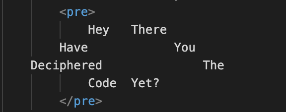

There are special tags that can be used for certain purposes
- Hello from the other side,
I must've called a thousand times
To tell you I'm sorry for everything that I've done
But when I call, you never seem to be home
How it looks in the code:

-
It can come handy if there is a special yet difficult to implement format
Hey There
Have You
Deciphered The
Code Yet?
How it looks in the code:

HTML feels like it has been designed for publishing a newspaper. You can
intuitively understand what does a tag do without looking it up:
The <blockquote> tag specifies a section that is quoted from another source. You can use the cite attribute to make a reference
If you would like to read more on this:
-
This is a great source to start with:
w3schools
-
Nevertheless, you shouldn't use this as the go-to source for everything. Sometimes it doesn't include important details!
-
I would highly encourage using this source to see what other examples there are:
developer.mozilla
-
I think the examples in this website are more helpful!
You can always lorem lipsum to generate dummy text:
Quisque finibus nunc felis, ut accumsan eros mollis eget. Nullam sodales neque non pulvinar ultrices. Proin vulputate velit dolor, non vulputate tellus tincidunt eu. Pellentesque posuere arcu sit amet orci dictum pharetra id sed tortor. Nunc ut ullamcorper ipsum. Curabitur sodales rhoncus metus efficitur mollis. Vestibulum eu metus in tortor laoreet dapibus nec vitae sem. Aenean vel viverra tellus. Vivamus mollis nunc mi, in tincidunt ipsum maximus in. Pellentesque augue eros, laoreet sed ultricies sed, tempor quis justo. Interdum et malesuada fames ac ante ipsum primis in faucibus.
There are other tags in HTML which can be used while designing a page
-
<button>
-
You might see this tag used a lot for interactive means
-
I think it is one of the coolest tags available because you can do everything with bottons
-
In a way, isn't everything a button?
-
<img>
-
You can use the <img> tag to display pictures.
-
It is also incredibly useful to get in the habit of writing this tag since it is used a lot.
-
I wish there weren't too many aspect ratios because it is annoying to re-size/crop pictures.
Now let's see some of the tags in a table - because why not!
| % |
1000 |
100 |
10 |
| 2 |
500 |
50 |
5 |
| 5 |
200 |
20 |
2 |
| 10 |
100 |
10 |
1 |
Some HTML Tags
| Supported in HTLM5 |
NOT Supported in HTLM5 |
| <abbr> |
<base> |
| <body> |
<frame> |
| <fieldset> |
<mark> |
| <acronym> |
<applet> |
| <basefont> |
<big> |
| <dir> |
<font> |
| <frameset> |
<noframe> |
It is very interesting that some tags are no longer used in html!
|